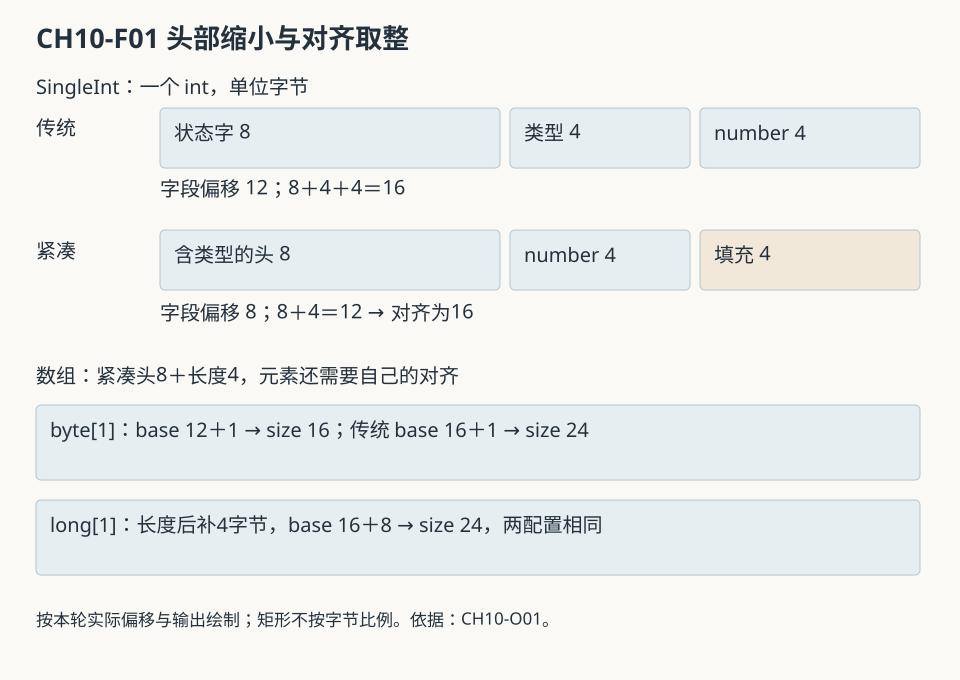
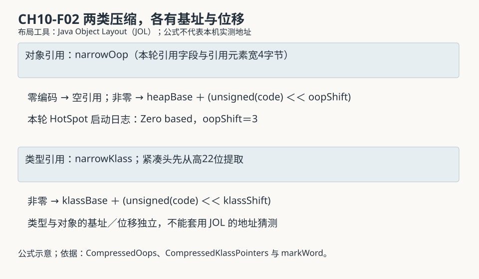

第三篇 · 运行时内存与对象模型
第 10 章 对象布局、压缩指针与紧凑对象头
一个对象的账单从头部开始，经过字段安排，最后按对齐取整。缩小对象头可以减少空间，也可能只改变空洞；引用目标的成本还要另算。
一个 int，为什么不是四字节对象
本章的 SingleInt 只有一个 int 字段，本机默认配置下占 16 字节；显式启用紧凑对象头后仍为 16 字节。空 Object 却从 16 字节降为 8 字节。这两个结果并不矛盾：字段要与头部一起布局，末尾还要满足对象对齐。只有逐项看偏移，才能解释没有节省的原因。
基线为 Java 开发工具包（Java Development Kit，JDK）25.0.5.0.2、64 位 HotSpot、macOS AArch64；对象对齐为 8 字节，堆上限 128 兆二进制字节（mebibyte，MiB）。Java 虚拟机（Java Virtual Machine，JVM）规范不规定本章的具体字节图，类型元数据与镜像的区别见第 8 章，进程账本见第 9 章。
10.1 普通对象与数组的组成
10.1.1 先找最后一个字节，再向对齐边界取整
传统 64 位头部包含状态字与类型信息。本轮开启压缩类型指针，状态字 8 字节、类型字 4 字节，普通字段可从偏移 12 开始。SingleInt.number 恰好占 12—15，得到 16 字节；空 Object 没有字段，需要把 12 字节头部向 8 字节边界取整，产生 4 字节末尾填充。若实际关闭类型压缩，头部组成又会改变，不能把 12 字节叫作所有配置的固定对象头。
估算时先确定字段实际偏移与宽度，取最大结束位置，再按对象对齐向上取整。数组另有 4 字节长度，其元素起始还取决于元素类型对齐。可以写作 size＝alignUp(base＋length×scale, alignment)，其中 base 是该元素类型的实际起始偏移，scale 是元素宽度；不能拿一个数组的 base 套所有数组。空数组即使没有元素，也有头部、长度和必要填充。S01

10.1.2 字段顺序、继承空洞与对象图
源码先声明 long sequence、再声明 byte tag，并不承诺它们按这个顺序紧贴排列。本轮传统布局中 Base.tag 位于 12，Base.sequence 位于 16；紧凑布局中 sequence 位于 8，tag 位于 16。FieldLayoutBuilder 会按宽度与引用组组织字段，依据父类布局、空洞及引用映射等安排；它必须保留父类字段的已定偏移，却不必把整个父类对象的尾部填充也当作不可利用字段。
本轮 Child 在传统模式的 count／reference 位于 24／28，紧凑模式位于 20／24，最终两者都占 32 字节。布局移动了，取整后总大小未变。静态字段属于第 9 章讨论的镜像关联存储，不重复计入每个 Child 实例。S02
对象自身大小又称浅大小，只算当前实例的字节。Mixed.reference 指向一个 byte[10]，数组成本不包含在 Mixed 的 24 字节中。两个 Mixed 共用该数组时，可达图只计数组一次。本轮工具遍历得到三对象，传统布局共 80 字节，紧凑布局共 72 字节；这不是任一对象独占的保留大小。与其他根共享的对象不能简单按某个引用分摊。
10.2 对象头中的运行时信息
10.2.1 类型、哈希、年龄与同步各有职责
类型定位使运行时能找到对象所属 Klass，进而取得大小、引用字段映射和方法等结构。身份哈希服务 System.identityHashCode 语义，不能当作稳定地址或唯一标识；对象移动后还要保持相应语义。年龄位可供特定收集过程使用，不代表对象已存活多少秒。锁相关位帮助同步路径判定当前表示，也不独立保存全部等待线程。
锁定 markWord.hpp 的 64 位普通状态字从高位向低位包含未用位、31 位身份哈希、4 位保留间隔、4 位年龄、1 位自转发和2位锁标记。紧凑模式把高处原本未用的 22 位用于压缩类型信息。这个布局中的 hash_shift 是 11；它与旧版图中的位移不同。位宽来自当前源码，不能从第三方工具的旧术语反推。S03
10.2.2 一个位图不足以描述全部生命周期
在轻量锁路径中，状态字可以保留大部分信息并改变锁标记；发生膨胀时，是否使用对象监视器表决定如何关联 ObjectMonitor。传统配置可在头中放监视器相关指针，紧凑头还要保持类型可取，因此本版本配合表结构处理。监视器结构承担拥有者、竞争与等待等信息，这些不会全挤在两个锁位里。
回收器移动对象时又可能需要转发表示和头部保存／恢复。markWord::must_be_preserved 对非普通未锁状态或已安装哈希的头作保留判定，具体由收集器协议承接。不能把普通头图直接套到任意转发中间态。第 27 章将按当前轻量锁和监视器协作展开；历史偏向锁、旧栈锁图不能作为本章默认执行路径。S04
10.3 两类压缩指针
10.3.1 对象引用与类型指针压缩不同的目标
压缩对象引用针对堆中对象地址，常见目标是缩小引用字段与引用数组元素；压缩类型指针针对本地 Klass 地址，减少对象头的类型表示。它们有不同地址范围、基址和配置，不能把 UseCompressedOops 与 UseCompressedClassPointers 当作同一开关。紧凑对象头要求压缩类型信息，不意味着概念上必须把所有对象引用也压成同一种位宽。
锁定 CompressedOops::decode 对零值单独返回空引用；非零值经过 base＋(unsigned(narrow)＜＜shift) 解码。编码反向减去基址并右移，前提是地址满足对齐与范围。CompressedKlassPointers 有独立基址和位移，公式相似但不共享全部数值。读取紧凑头时还要先从状态字提取压缩类型位。S05

10.3.2 地址范围、对齐和可表示空间一起决定配置
32 位窄对象引用配合 3 位左移时，编码空间可覆盖约 2³⁵ 字节的地址跨度；这是一种常见推算，不等于所有配置都能在任何地址预留同样大小堆。零值保留、保护范围、堆基址、收集器限制和实际地址布局也参与选择。调整对象对齐可能换取更多可表示跨度，却会给大量小对象增加尾部填充。只背“超过某容量就一定关闭压缩”不足以解释实际配置。
本轮两主进程的 HotSpot 日志均报告 Zero based、oop shift amount 3；工具的引用元素宽度均为 4。Java Object Layout（JOL）未附加服务性代理（Serviceability Agent，SA），它自己打印的基址／位移有明确猜测警告，不能据此声称本机类型指针也恰好按相同位移解码。对象引用模式以虚拟机日志为准，类型编码的机制以锁定源码为准；本章不伪造具体 Klass 地址。
10.4 紧凑对象头设计
10.4.1 省掉独立类型字，但保留运行时职责
JDK 增强提案（JDK Enhancement Proposal，JEP）519 把紧凑对象头变为 JDK 25 的产品特性，默认仍关闭，启用不再需要实验选项解锁。本轮 PrintFlagsFinal 也显示 UseCompactObjectHeaders=false 为默认值，显式启用后为 true。产品状态、默认选择与本机实际生效应分别查证。S06
传统压缩类型布局的普通对象有 8 字节状态字和 4 字节独立类型字；紧凑布局把类型编码放入同一个 8 字节头，因此普通对象字段起始可从 12 提前到 8。数组长度从 12 提前到 8，但元素起始仍须考虑自身对齐。本轮 byte[] 和 int[] 的 base 变为 12，long[] 的 base 仍为 16。减少头部字节并不意味着完全删除其职责，更不表示任意数组的元素都提前 4 字节。
10.4.2 锁、哈希和移动必须共同适配
Arguments::set_compact_headers_flags 检查压缩类指针、轻量锁与监视器表组合；启用紧凑头时会处理不相容配置。同步路径若直接覆盖唯一头字，可能丢失类型编码；回收器若把它改成转发表示，又必须在后续仍能取得类型并恢复需要保留的信息。头部节省来自这些协议协作，不能只把一幅图中的“类型指针”方块擦掉。
本轮补充启动查询在解锁诊断参数后，默认配置显示 UseObjectMonitorTable=false，紧凑配置显示 true；两者 LockingMode 都为 2。此项查询是在独立启动进程中完成，用于对应同组选项的运行时适配，不冒充主样本里的锁膨胀实测。本章没有制造竞争或检查移动中间态，只从源码说明责任，相关实际协议交给同步与收集章节。
10.5 JDK 25 配置与空间估算
10.5.1 先记配置，再比较结果
CH10-E01 的 LayoutJourney 固定九组样本，并观察两个包装对象共用一个数组及哈希安装前后。两次主运行均正常退出 0。传统组没有显式指定头部选项；紧凑组只增加 -XX:+UseCompactObjectHeaders。堆初始与上限、对齐、工具、输入一致；没有把差异扩展成性能比较。
| 参数 | 默认组 | 紧凑组 |
|---|---|---|
| UseCompactObjectHeaders | false，default | true，command line |
| UseCompressedOops | true，ergonomic | true，ergonomic |
| UseCompressedClassPointers | true | true |
| ObjectAlignmentInBytes | 8 | 8 |
| LockingMode | 2 | 2 |
| UseObjectMonitorTable | false | true |
本章使用 JOL 官方 0.18-SNAPSHOT 的固定提交构建，不把它冒称正式 0.18 发布版。其字段／数组偏移可用于当前布局，状态描述仍有旧版解码。原始警告和适用范围见工具说明及本章运行记录。
10.5.2 算上填充，才能解释“节省为零”
| 样本 | 传统 | 紧凑 | 取整的影响 |
|---|---|---|---|
| Object | 16 | 8 | 12→16 与 8→8 |
| SingleInt | 16 | 16 | 12＋4 与 8＋4→16 |
| Mixed | 24 | 24 | 紧凑布局的末尾新增4字节填充 |
| Child | 32 | 32 | 父子字段偏移变化，总量相同 |
| byte[0] | 16 | 16 | 空数组仍受8字节对齐 |
| byte[1] | 24 | 16 | 17→24 与13→16 |
| int[3] | 32 | 24 | 16＋12→32 与12＋12＝24 |
| long[1] | 24 | 24 | 元素起始仍为16 |
| Object[3] | 32 | 24 | 每个引用4字节，不含目标对象 |
这里给出的比例只属于这些样本，不能推广为整个应用一定节省相同比例。真实对象分布、字段重排、数组长度、对象图共享、收集器与本地成本都会影响进程收益。即便浅大小减半，进程驻留也不会因此必然减半。
工具、源码与证据的边界
教学源和阅读副本来自同一 LayoutJourney.java；运行说明保存安装、编译和两配置命令。工具以自身 -javaagent 启动，SA 附加明确跳过，不要求改系统权限。源码、类、工具与归档摘要见本轮记录；工具核心源码和许可证随证据保留。
JOL 的输出含“Lilliput VM detected (experimental)”和“non-biasable”等旧字样，ClassLayout.parseMarkWord 仍按旧位移 8 解码哈希，而本基线源码为 11。默认组打印的解码哈希也与本次 identityHashCode 值不一致。故这些文字只作为工具原输出保留，不是 JDK 25 的特性状态或状态位依据。哈希安装前后原始头字变化、大小未变可以观察；具体语义回到 markWord.hpp。同样，工具提示地址猜测就不能用它画一幅假称实测的对象地址图。
首次运行曾因主程序查询未解锁的诊断参数而中止，原失败保留；修正普通参数输出后重编译，再取得两组布局。单独诊断启动查询提供监视器表值。没有用重跑覆盖初次事实，也没有把工具的部分兼容包装成全部兼容。来源索引逐项区分字段布局、状态源码和实际运行依据。
回顾与思考
对象大小是头部、实际字段布局和对齐共同作用的结果。两种压缩分别面向对象和类型；紧凑头进一步改变类型编码与运行时协作，最终收益要按对象分布逐项计算。
- 为什么 SingleInt 头部减少 4 字节，总大小仍不变？若对象对齐改为16字节，应重新核对哪些项？
- 为什么紧凑模式 long[1] 的元素仍从16开始，而 int[3] 可以从12开始？
- 两个引用指向同一数组时，浅大小、可达总大小和保留大小各回答什么问题？
- 为什么看到 JOL 输出的“experimental”，仍不能据此否定当前 JDK 的产品特性状态？
第 11 章将把静态字节布局接到动态过程：空间从哪里来，何时清零、构造与发布，以及有些逻辑对象为何没有常驻堆表示。
来源与材料
- S01：锁定 oopDesc、ObjLayout、arrayOopDesc，普通字段起始、长度与元素对齐；精确文件索引。
- S02：锁定 FieldLayoutBuilder::compute_regular_layout、regular_field_sorting、FieldLayout 父类布局处理。
- S03：锁定 markWord.hpp 的64位位图、hash_shift、klass_bits、must_be_preserved。
- S04：markWord 的监视器表条件、转发／保留接口及 Arguments::set_compact_headers_flags；未在本章实测竞争／移动。
- S05：CompressedOops::decode／encode 与 CompressedKlassPointers::decode／encode 的独立基址、位移和空值分支。
- S06：JEP 519、锁定 globals.hpp 的产品默认、本轮有效配置与布局。
- O01：JOL 官方提交 db2cc744485031c8149991a004ab02f2ea9b24dd，本地工具构建及兼容边界。